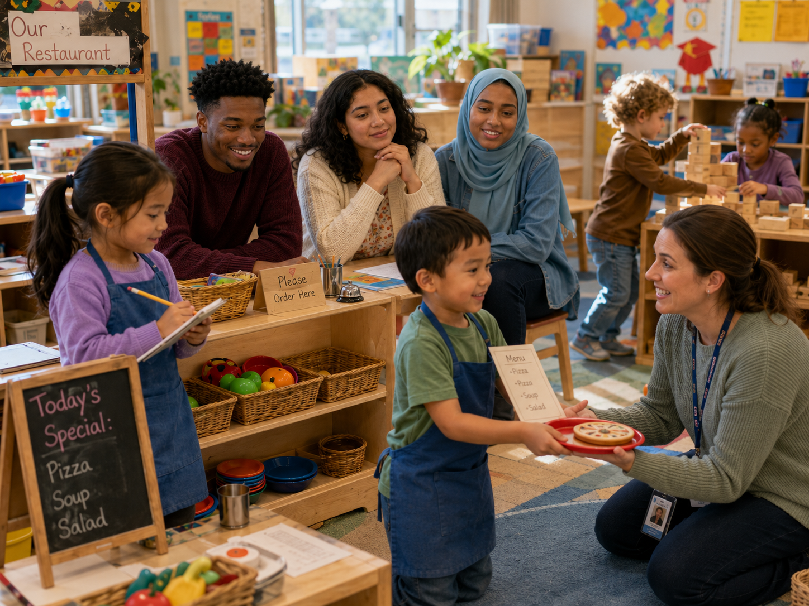

Play and learning
🔎 See what play contains
Which statement best explains the restaurant play?
The meaning and value of play

Jordan: “What if a parent asks, ‘Did they learn anything today, or did they just play?’”
Maya: “Maybe the answer is: they learned through play.”
Aaliyah: “Look at what’s happening—language, counting, imagination, cooperation, problem-solving, turn-taking, fine-motor skills, and social roles.”
Maya: “And negotiation: ‘I’m the chef first, then you can be the chef.’”
Jordan: “Play is not a break from learning. It’s one of the main ways young children learn.”
The teacher kneels nearby and asks, “How many customers can sit at your restaurant?”
Aaliyah: “She isn’t taking over the play; she’s extending it.”
Maya’s note: Play reveals what children know—and helps them practice what they are learning.
Which statement best explains the restaurant play?
Choose the best description for each form.
A child writes orders, counts pretend tacos, negotiates roles, and delivers plates. What is the strongest interpretation?
Children are deeply involved in building a pretend veterinary clinic when cleanup time approaches. What is the best response?
Children are operating a pretend restaurant. Which teacher move best extends the play?
A family asks, “What did my child learn while playing restaurant?” What is the strongest response?
Which response best supports a child who watches restaurant play but does not enter?
Which teacher action is most likely to weaken child-directed play?
Which sequence best represents intentional support for play?
Complete this sentence: Play is central to learning because…
Play gives children an active, meaningful context for using ideas, skills, language, imagination, and relationships.
Did your response mention development, agency, motivation, social learning, problem-solving, or integrated domains?
Intentional teachers protect play, observe closely, make learning visible, and extend ideas without taking ownership away from children.